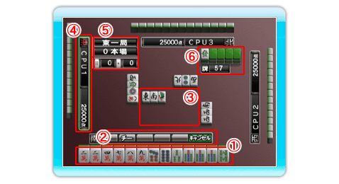

対局中の画面の説明を行います。
●基本的な表示説明

| |
| ① 手牌 |
自分の手牌です。 で捨てる牌を選択し、 で決定します。 で決定します。 |
| |
| ② 行動メニュー |
ポン、カンなど鳴きを行うときやリーチがかけられるときなどに表示されます。
で行動を選択し、で決定します。 |
| |
| ③ 河（捨牌） |
河に捨てられた牌が表示されます。
打牌の際に、手出しの場合は青色、ツモ切りの場合は黄色のマークが表示されます。 |
| |
| ④ メンバー情報 |
各プレイヤーの名前や、得点、風マークが表示されます。
「東」のプレイヤーがその局の親です。 |
| |
| ⑤ 局情報 |
現在の局、本場、などの情報が表示されます。 |
| |
| ⑥ 王牌／山牌数 |
王牌と残りの山の数が表示されます。 |
| |
|
|
|